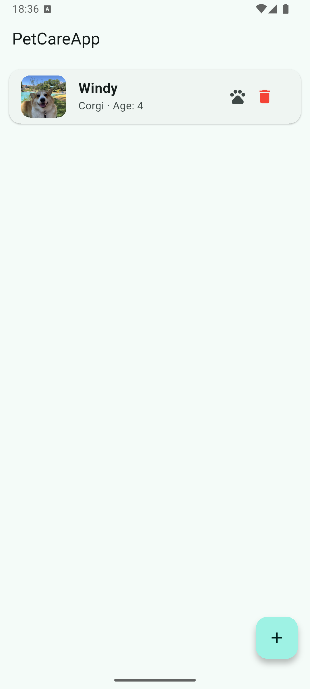
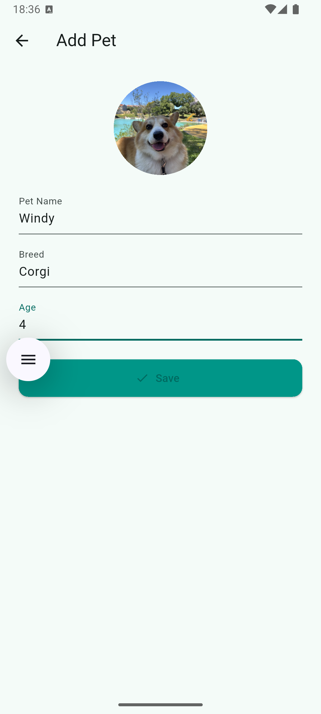
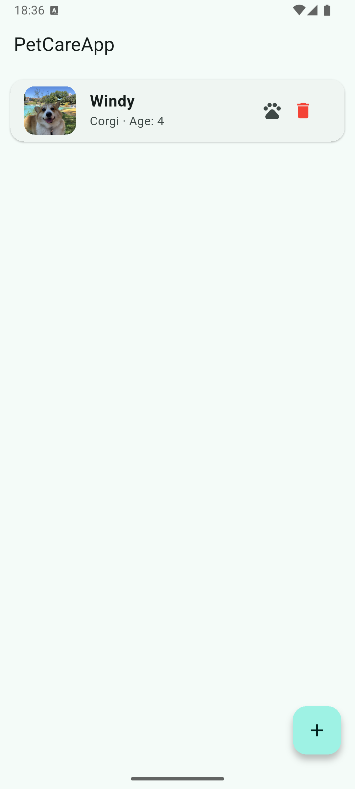
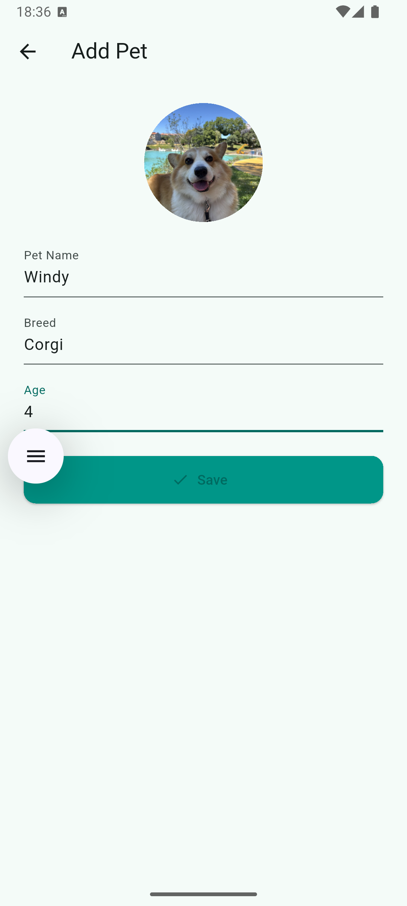

About PetCareApp
This mobile app is designed for pet care and tracking. The app allows owners to keep track of their pets’ data, including vaccinations, vet visits, medications, and activity. It also features a pet location tracking feature using Bluetooth trackers. An interactive map displays the pet’s current coordinates, helping to quickly locate it if needed. The app is integrated with the Firebase cloud database, ensuring secure storage and synchronization of information.
 


